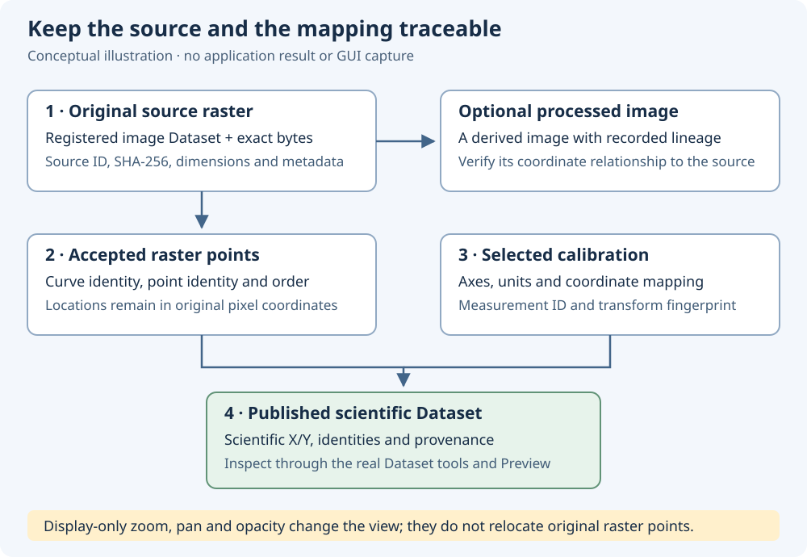

Preparation manuscript · illustrative calculation
Keep pixels, calibration and scientific evidence distinct
A digitized curve links a position in a source raster to a scientific coordinate. Understanding that link helps you preserve point order, compare calibrations and interpret uncertainty honestly.
This draft explains concepts using the independent calibrated_digitizer reference. It is preparatory material for TASK210; the final manual must be reconciled against released dev110. The diagram below is an authored illustration, rather than a capture of GX-TXT Dataset Preview.
One position, two coordinate descriptions
The reference generator describes a 100 × 100 raster. Image pixel Y increases downward. The four calibration corners are (10, 90), (90, 90), (10, 10), and (90, 10). The scientific ranges are 0–8 seconds and −2–2 volts.
For this particular linear, rectangular calibration, the reference equations are x = (pixel_x − 10) / 10 seconds and y = (50 − pixel_y) / 20 volts. They describe this reference only; a skewed quadrilateral or logarithmic axis needs its actual calibration transform.
Explore the reference mapping
Illustrative coordinate: 2 s, −1 V.
The selected location is inside the calibration rectangle.
Moving the marker downward increases image Y and decreases voltage for this calibration. Enlarging the image on screen changes neither the original pixel location nor its calibrated value.
| Traversal order | Original pixel (X, Y) | Time (s) | Voltage (V) |
|---|---|---|---|
| point-1 | (30, 70) | 2 | −1 |
| point-2 | (60, 40) | 5 | 0.5 |
| point-3 | (75, 65) | 6.5 | −0.75 |
| point-4 | (40, 25) | 3 | 1.25 |
The reference traversal deliberately returns to a lower X at point-4. Sorting by X changes the traversal order. A matching set of coordinates alone does not establish matching point order.
A calibration belongs to an exact source

A source Dataset ID identifies the registered source, while its SHA-256 identifies the image bytes used for calibration. A label or filename may remain familiar even when pixels change. Preserve the original source and recorded calibration together.
If a source becomes stale, recover the verified original or establish a fresh configuration for the changed image through the supported workflow. Restoring a source cannot be replaced by assuming that a similarly named image has the same raster geometry.
Image-processing operations may help an operator see a faint trace. A processed derivative needs traceable source identity and a verified coordinate relationship. A display opacity adjustment, a processed image and the canonical original serve different purposes.
Two grouping dimensions can coexist

Several curves can share one raster. Several accepted calibration measurements can also map the same raster points into different scientific realizations. Keep curve identity and calibration identity visible when inspecting combined results.
| Item | What it distinguishes | Interpretation to retain |
|---|---|---|
| Curve key | A curve within the published Dataset | An editable curve label is a display name. |
| Point identity/order | A particular observation and its traversal position | X coordinates alone do not define traversal. |
| Calibration measurement ID | An operator's particular calibration realization | Two IDs can have equal numerical transforms. |
| Transform fingerprint | The numerical coordinate mapping | Equal fingerprints do not establish independent observations. |
| Calibration key in combined output | The mapping responsible for a row's scientific coordinates | Group by curve and calibration where the contract requires both. |
Repeatedly digitizing or calibrating the same raster explores the raster measurement procedure. It does not create new independent physical measurements of the underlying specimen or device.
State what each diagnostic establishes
Calibration verification asks whether a known coordinate agrees with the selected mapping at a chosen image point. Four fitted corner residuals alone cannot establish independent measurement accuracy. Local line contrast and width describe image evidence, with limitations from overlap, noise and rasterization.
A standard uncertainty requires an explicit error model and evidence. Under a declared uniform interval with full width w, the standard uncertainty is w/√12. Under a declared normal model, an entered standard uncertainty already has that meaning. The same numeral has different consequences when it describes a full width or a standard uncertainty.
For the reference's fixed calibration, the derivatives are 0.1 s per horizontal pixel and −0.05 V per vertical pixel. Declared independent rectangular full widths of 1 horizontal pixel and 2 vertical pixels therefore give analytical standard uncertainties of approximately 0.0288675 s and 0.0288675 V. These numbers follow stated reference assumptions; they are not measured operator precision or a GX-TXT execution result.
Uncertain shared calibration inputs can correlate different points. Marginal standard uncertainties do not capture all cross-point covariance. Use the released public scientific interpretation and supported fitting route; preserve explicit limitations for combined calibrations, scale-bar models and unsupported covariance cases.
A raster stroke width does not by itself determine the probability distribution of a curve's centerline. The final manual must describe stroke-width controls only if they exist in the accepted module, and retain this scientific qualification.
Interpret the published result before using it
- Identify the actual published Dataset and its units, source and calibration.
- Check curve and calibration grouping, point order and retained raster coordinates.
- Inspect available source-image and quality information in the real Dataset Preview.
- Distinguish unknown uncertainty from an explicit justified zero and from a supported nonzero declaration.
- Preserve the Session and reopen the configuration and Dataset through the normal framework workflow.
The eventual tutorials will show these operations in the real released GUI with the actual Session/Dataset identities. This preparation manuscript supplies explanatory content only.